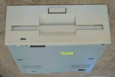
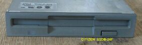

| サイズ |
メーカ、型名 |
写真 |
適応機種など |
| 8インチ |
NEC FD1165-A |
|
パソコン本体には入らないので、外付け。
PC-98用PC-9881K
N5200用 N5257-01A
PC-8881に入っていた、FD1165 S の写真を追加。(2005/10/05)
|
| 5インチ |
NEC FYD051
TEAC FD-55F-03-U |
|
PC-9801Fなど
640KB |
| 5インチ |
TEAC FD-55GFR |
|
PC-98DO PC-98DO+ |
| 5インチ |
NEC FD1055 |
|
640KB/1MB |
| 5インチ |
NEC FD1155 |
|
PC-9801VF
640KB |
| 5インチ |
NEC FD1155C |
|
PC-9801VMなど
PC-9801M
1MB |
| 5インチ |
NEC FD1155D |
|
PC-9801VX,DA,DS,DXRA,RS,RXなど |
| 5インチ |
NEC FD1157C |
|
EPSON KX-2015から取り外したもの |
| 5インチ |
NEC FD1157D |
|
外付けFDDから取り外したもの |
| 5インチ |
NEC FD1158C |
|
PC-9801BA、など |
| 5インチ |
NEC FD1158D |
|
PC-9801FAなど |
| 3.5インチ |
NEC FD1035 |
 |
PC-9801U 640KB |
| 3.5インチ |
NEC FD1038A |
|
不明 |
| 3.5インチ |
NEC FD1135D |
|
PC-9801UV,UV21 |
| 3.5インチ |
NEC FD1136C |
|
PC-98LT |
| 3.5インチ |
NEC FD1137C |
 |
不明
外付けFDDで、FD235GFと代替え可能 |
| 3.5インチ |
NEC FD1137D |
|
PC-9801DA,DX,UXなど。
これは、ベゼルが付いているので、
多分、UXで使用していたもの。 |
| 3.5インチ |
NEC FD1138C |
|
PC-9801FX
PC-9821Asなどでも2モードで使用可能 |
| 3.5インチ |
NEC FD1138D |
|
PC-9801FA,UR |
| 3.5インチ |
NEC FD1138T |
|
PC-9901BX,PC9821Ae,As,Apなど |
| 3.5インチ |
NEC FD1138T (2) |
|
不明 |
| 3.5インチ |
NEC FD1148T |
|
PC-9821Xe,Xs |
| 3.5インチ |
NEC FD1148T(2) |
|
PC-9821Xe10
FD1231Tと互換性あり。PC-9821V20のWindows98で
3モードの3.5インチFDDとして認識された。 |
| 3.5インチ |
CITIZEN U1DB-26F |
 |
使用機種不明
|
| 3.5インチ |
CITIZEN U1DB-82L |
|
PC-9821 model1,model2
PC-9821Asなどでも使用可能 |
| 3.5インチ |
CITIZEN V1DB-76B |
|
PC-98NV Note
PC-9821Asなどでも使用可能 |
| 3.5インチ |
YE DATA 686C |
|
外付けFDDから回収 |
| 5インチ |
EPSON SD680L |
|
PC-286V |
| 5インチ |
EPSON MD5501S |
|
PC-486GF |
| 3.5インチ |
EPSON SMD-300 |
|
PC-486SR
使用機種不明のピンコネクタ型もある
|
| 3.5インチ |
EPSON MD3541G |
|
PC-486GF |
| 3.5インチ |
TEAC FD-235GF |
|
外付けFDD |